Windows
0.2.20.0
64-bit installer, 12.5 MB. Not code-signed: if SmartScreen appears, choose More info, then Run anyway. This build does not include the Linux 0.2.21.0 menus.
Proposal A · mockup, not the live site

ChipWave StudioFree for Windows, Mac & Linux
A free music sequencer. Arrange on a timeline, write in the piano roll, program drums, and shape sounds with WaveForge, StringWave, FM-4, Analog and Chip FX.

Linux packages are 0.2.21.0. Windows and Mac stay on 0.2.20.0, because a newer Mac package is not published. Each button is pinned to that file, not to GitHub’s Latest.
0.2.20.0
64-bit installer, 12.5 MB. Not code-signed: if SmartScreen appears, choose More info, then Run anyway. This build does not include the Linux 0.2.21.0 menus.
0.2.20.0
Universal, Apple Silicon and Intel, 34.2 MB. macOS 11 or later. Not notarised: first launch with Control-click, then Open. No 0.2.21.0 Mac build is published.
0.2.21.0
x86_64, glibc 2.35 or newer, built on Ubuntu 22.04. Intel and AMD only. Unsigned. No Flatpak, Snap or ARM. This is the build with the eight-place pie menu.
Linux 0.2.21.0 only: right-click a track, clip, empty lane, Rack instrument or effect, automation lane, or Song / Master. The eight places stay put, and Save, Save As… and Export… are on the song title. Windows and Mac 0.2.20.0 do not have this yet. The .deb was installed, self-tested and removed on Ubuntu 22.04, 24.04 and Debian 12; the .rpm on Fedora 41 and openSUSE Leap 15.6. The AppImage uses system ALSA, OpenGL and X11 or Wayland. Without FUSE, run --appimage-extract and then squashfs-root/AppRun.
Windows and Mac checksums Linux checksums 0.2.20.0 promo Short PayPal Buy me a coffee Del (postmanpat) · GPL-3.0